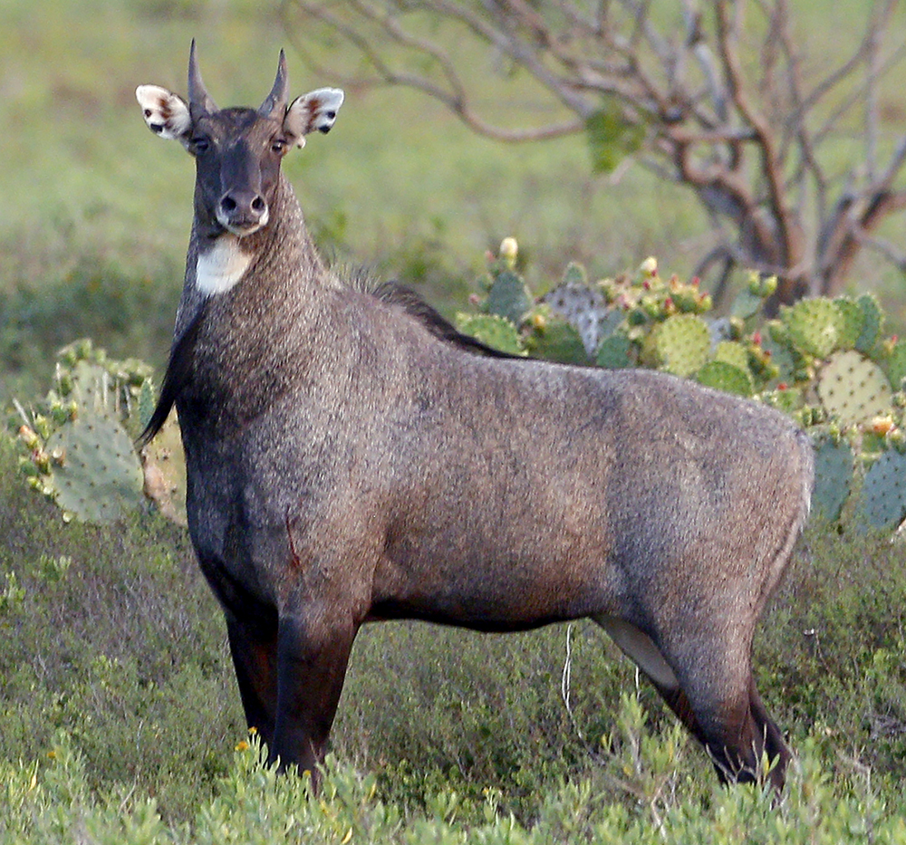
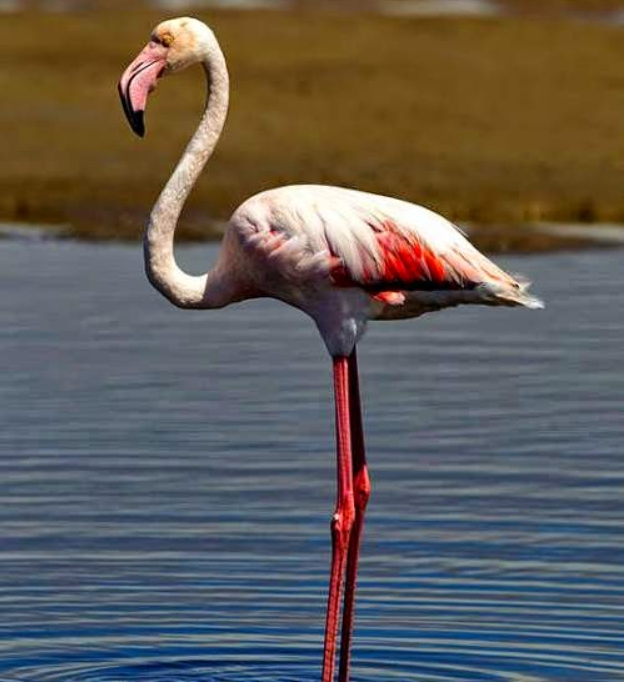
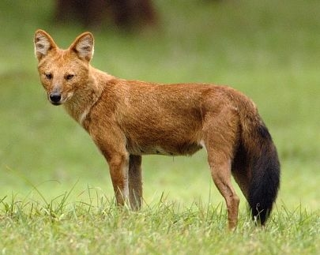

Location : Uttara Kannada district
Established in : 1987
Area : 1300 km2 Flora : The park is in the ecoregions of North Western Ghats montane rain forests and North Western
Ghats moist deciduous forests
Fauna : The black panther, elephants and tigers live in the park but are rarely seen. Other large
mammals here are Indian bison, sloth bear, Indian wild boar, bonnet macaque, northern plains grey langur, grey slender
loris, several deer including: barking deer (muntjac), mouse deer (chevrotain), sambar deer and spotted deer (chital or
axis deer). Wild dog, jackal, jungle cat, leopard cat, small Indian civet, Indian grey mongoose, flying squirrel,
porcupine, Malabar civet, Indian giant squirrel and pangolin also make their home in the forests here.
Reptiles in the park include the king cobra, spectacled cobra, Russell's viper, saw-scaled viper, common krait,
Indian rock python, rat snake, vine snake, green or bamboo pit viper and monitor lizards.
Anshi National Park
Indian grey mongoose
Sloth bear
Bandipur National Park
Location : Chamarajnagar district
Established in : 1974
Area : 868.63 km2 Flora : Bandipur supports a wide range of timber trees including: teak, rosewood, sandalwood,
Indian-laurel, Indian kino tree, giant clumping bamboo, clumping bamboo and Grewia tiliaefolia.
There are also several notable flowering and fruiting trees and shrubs including: kadam tree, Indian gooseberry,
crape-myrtle, axlewood, black myrobalan, Schleichera trijuga, Odina wodiar, flame of the forest, golden shower tree,
satinwood, black cutch, Shorea talura, indigoberry.
Fauna : Indian elephant, gaur, Bengal tiger, sloth bear, mugger crocodile, Indian rock python,
four-horned antelope, golden jackal, dhole, chital, gray langur, Indian giant squirrel, etc.
Peafowl are among the most commonly seen birds in Bandipur along with grey junglefowl, crows and drongos.
Bandipur is home to over 200 species of birds including honey buzzards, red-headed vultures, Indian vultures,
flowerpeckers, hoopoes, Indian rollers, brown fish owls, crested serpent eagles, changeable hawk-eagles, bee-eaters
and many kingfishers and ospreyss are a common sight in winter.
Bandipur National Park
Mugger crocodile
Bengal tiger
Bannerghatta National Park
Location : Near Bangalore, Karnataka
Established in : 1974
Area : 260.51 km2 Flora : Flora in the park include: Narcissus latifolia, Schleichera oleosa, Terminalia tomentosa,
Sandalwood, Neem, T. arjuna, Grewia tilaefolia, Santalum album, Tamarind, Bamboo, Eucalyptus, Bauhinia purpurea,
Samanea saman, Peltphorum pterocarpum, etc.
Fauna : Fauna in the park include: Indian elephants, gaur, Indian leopard, jackal, fox, sloth bear,
Indian gazelle, spotted deer, barking deer, common langur, bonnet macaque, porcupine, hare, wild boar, pangolin,
Royal Bengal tiger, slender loris, monitor lizard, cobras, python, Russell's viper, krait, peacock, crocodile,
Asiatic lion, Flamingo, Nilgai, Blackbuck, Pelican, Indian wolf, Striped hyena, Himalayan black bear, etc.
Bannerghatta National Park

Nilgai

Flamingo
Kudremukh National Park
Location : Chikkamagaluru district, Karnataka
Established in : 1987
Area : 600.32 km2 Flora : Natural grassland and shola forests, evergreen vegetation
Fauna : The animals found there include lion-tailed macaque, malabar civets, wild dogs, sloth bears
and spotted deer.
Kudremukh National Park
Spotted deer

Wild dog
Nagarhole National Park
Location : Kodagu district and Mysore district in Karnataka
Established in : 1988
Area : 643 km2 Flora : The vegetation here consists mainly of North Western Ghats moist deciduous forests with teak
and rosewood predominating in the southern parts. There is Central Deccan Plateau dry deciduous forests with Pala
indigo and thorny wattle towards the east. There are some sub-montane valley swamp forests with several species of
the Eugenia genus. The main trees are the commercially important rosewood, teak, sandalwood and silver oak.
Fauna : The carnivores are Bengal tiger, Indian leopard, dhole, and sloth bear. The herbivores are
chital, sambar deer, barking deer, four-horned antelope, gaur, wild boar, and Indian elephant. Other mammals include
gray langur, bonnet macaque, jungle cat, leopard cat, slender loris, small Indian civet, Asian palm civet, golden jackal,
Indian grey mongoose, Indian brown mongoose and stripe-necked mongoose, European otter, Indian giant flying squirrel,
Indian giant squirrel, porcupine, chevrotain, hare, Indian pangolin, etc. Reptiles and over 250 species of birds are
also present.
Features : UNESCO World Heritage Site